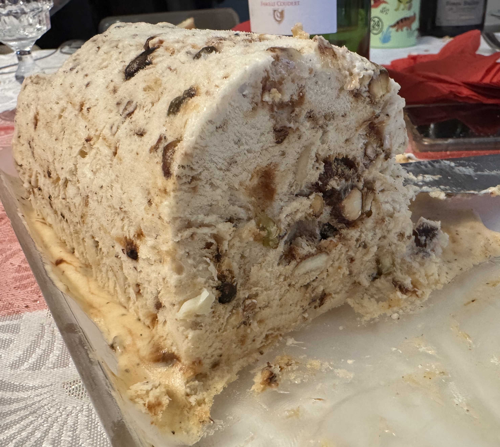

Nougat glacé
Ingrédients
6×
- 75 g de pistaches
- 150 g d’amandes
- 120 g de sucre
- 3 œufs
- 100 g de miel d’acacia
- 40 cl de crème fleurette

À servir avec un coulis de frambroise.
Préparation
Étape 1
Torréfier 75 g de pistaches et 150 g d’amandes dans une poêle. Les saupoudrer de 40 g de sucre et laisser caraméliser.
Étape 2
Séparer les blancs des jaunes de 3 œufs.
Étape 3
Chauffer 100 g de miel d’acacia.
Étape 4
Monter les blancs en neige, puis ajouter le miel bouillant en filet.
Étape 5
Fouetter 80 g de sucre avec les jaunes. Incorporer les blancs en neige.
Étape 6
Monter 40 cl de crème fleurette en chantilly et l’incorporer à la préparation.
Étape 7
Ajouter enfin les pistaches et les amandes concassées.
Étape 8
Verser dans un moule à cake, de préférence en silicone. Sinon, tapisser le moule de film alimentaire pour démouler le nougat plus facilement.
Étape 9
Mettre au congélateur pendant au moins 12 h avant de servir.
Résumé
75 g de pistaches
150 g d’amandes
40 g de sucre
Torréfier laisser caraméliser
3 œufs
Séparer les blancs des jaunes
100 g de miel d’acacia
Chauffer
Monter les blancs en neige ajouter
80 g de sucre
Fouetter Incorporer
40 cl de crème fleurette
Monter incorporer
Ajouter
Verser
Mettre au congélateur